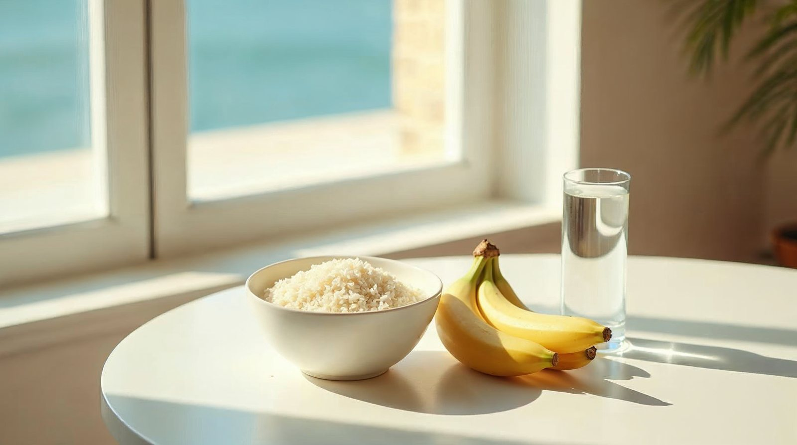
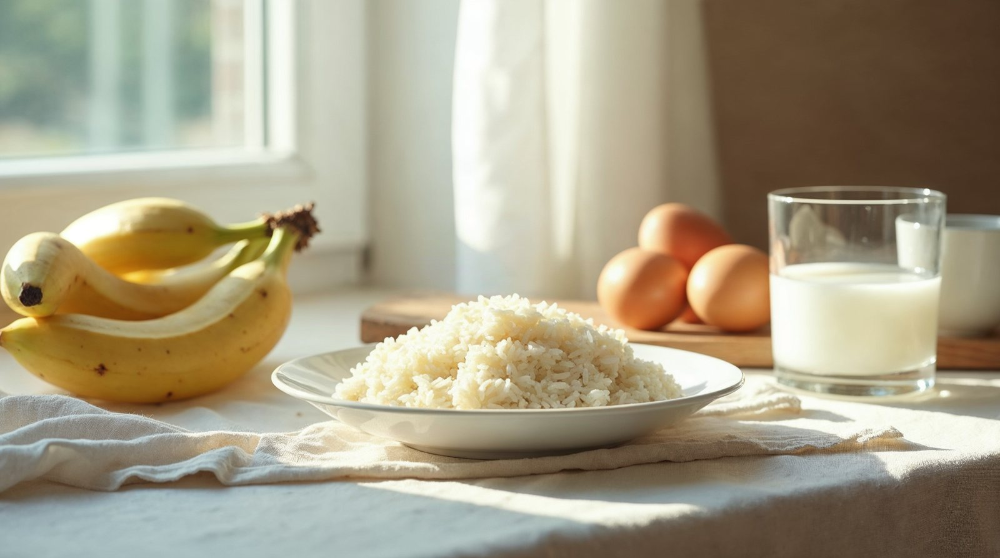
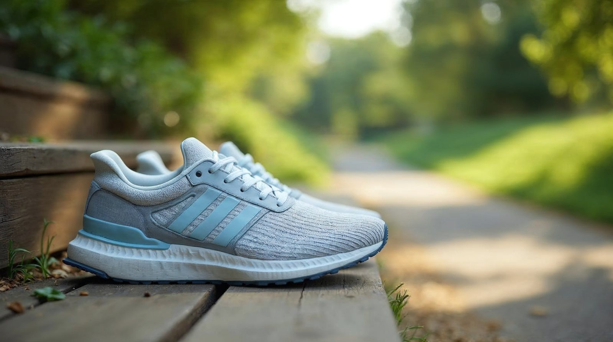
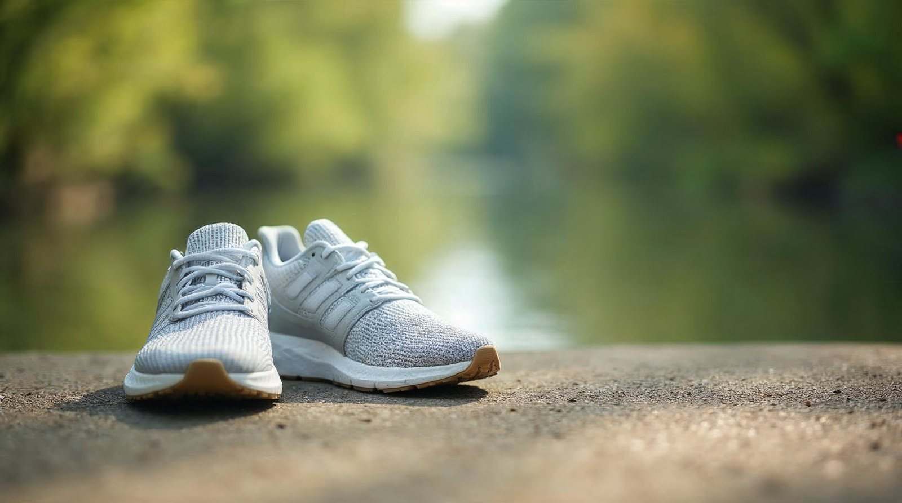
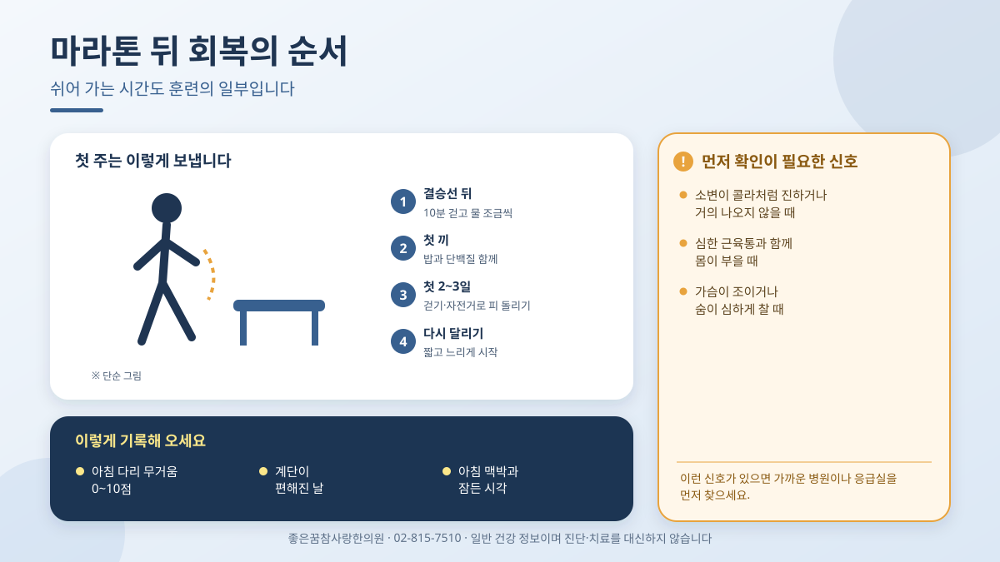

이종호 한의사 감수좋은꿈참사랑한의원 대표원장 (한의사 면허번호 19769)발행 2026-11-26 · 수정 2026-11-26
이 글의 차례
가을 대회 날, 몇 달 동안 준비한 끝에 결승선을 통과합니다. 메달을 목에 걸고 사진을 찍을 때까지는 기분이 날아갈 것 같습니다. 그런데 차에 타려고 다리를 굽히는 순간 허벅지가 비명을 지르고, 집에 돌아와 계단을 내려갈 때는 뒤로 돌아서 내려가게 됩니다.
마라톤이나 하프 마라톤, 혹은 평소보다 훨씬 긴 거리를 달린 뒤에는 누구나 며칠 동안 몸이 무겁고 쑤십니다. 달리는 동안 몇만 번 발을 딛으면서 다리 근육과 힘줄, 관절이 쉬지 않고 충격을 받았기 때문입니다. 근육만이 아니라 몸 전체가 큰일을 치른 셈입니다.
진료실에서 대회를 마친 분들을 만나면 저는 먼저 수고하셨다는 말씀부터 드립니다. 그리고 이 시기를 어떻게 보내느냐가 다음 대회까지의 몸을 정한다고 덧붙입니다. 회복도 훈련의 일부라는 말을 진료실에서 자주 하는 이유입니다.
대회 뒤 며칠은 기분이 들떠서 무리하기 쉬운 시기이기도 합니다. 다음 날 바로 회복 달리기를 나가거나, 축하 모임에서 술을 많이 드시거나, 아픈 곳을 진통제로 가리고 지나가기도 합니다. 이 글은 그 며칠을 조금 더 편하게 보내도록 돕기 위한 정리입니다.
장거리 달리기는 몸에 어떤 부담을 주나요
달리는 동안 발이 땅에 닿을 때마다 체중의 두세 배에 가까운 힘이 다리로 전해집니다. 마라톤 한 번이면 이 충격이 몇만 번 반복됩니다. 허벅지 앞과 종아리 근육은 착지할 때마다 늘어나면서 브레이크를 거는 일을 하고, 이 과정에서 근육 섬유에 작은 손상이 쌓입니다.
근육만이 아닙니다. 아킬레스건과 무릎 아래 힘줄, 발바닥 근막도 같은 횟수만큼 당겨졌다 풀렸다를 반복합니다. 그래서 대회 뒤에는 근육통과 함께 발뒤꿈치, 무릎 주변, 정강이처럼 특정 자리의 통증이 함께 나타나기도 합니다.
몸 전체도 지칩니다. 몇 시간 동안 땀으로 물과 염분이 빠져나가고, 몸에 저장해 둔 에너지는 거의 바닥이 납니다. 대회 뒤 며칠 동안 쉽게 피곤하고 졸리며, 감기에 잘 걸린다고 느끼는 분이 많은 것도 이 때문입니다.
왜 대회 다음 날보다 그다음 날이 더 힘들까요
대회 직후에는 긴장과 흥분 덕분에 통증을 덜 느낍니다. 하지만 근육의 작은 손상을 고치는 회복 반응은 하루이틀째에 가장 활발해집니다. 그 과정에서 근육이 붓고 예민해져서, 대회 이틀째 계단 내려가기가 가장 힘들다고 말씀하시는 분이 많습니다.
내리막이 많은 코스를 달렸다면 이 근육통은 더 심해집니다. 내리막에서는 허벅지 앞 근육이 늘어나며 버티는 일을 더 많이 하기 때문입니다. 반대로 평지 코스라도 후반에 자세가 무너졌다면 종아리와 엉덩이 쪽에 부담이 몰리기도 합니다.
이 근육통은 대개 3~5일에 걸쳐 가라앉습니다. 다만 근육이 다시 예전처럼 힘을 낼 수 있게 되기까지는 그보다 더 시간이 걸립니다. 통증이 없어졌다고 바로 강한 훈련으로 돌아가면 안 되는 이유가 여기에 있습니다.
대회 직후부터 첫날 밤까지
결승선을 통과한 뒤 바로 주저앉기보다 10분 정도 천천히 걸으며 숨을 고르세요. 갑자기 멈추면 다리에 몰린 피가 돌아오지 못해 어지러울 수 있습니다. 걸으면서 물이나 이온 음료를 조금씩 드시고, 땀에 젖은 옷은 되도록 빨리 갈아입습니다.
첫 끼는 대회 뒤 한두 시간 안에 드시는 것이 좋습니다. 밥이나 면처럼 에너지를 채울 음식과 달걀, 두부, 생선, 고기처럼 단백질이 든 음식을 함께 드시면 회복에 필요한 재료를 채울 수 있습니다. 입맛이 없다면 바나나와 우유, 죽처럼 가볍게 시작하셔도 됩니다.
대회 당일 밤에는 뜨거운 탕에 오래 들어가거나 술을 많이 드시는 것은 미뤄 두시길 권합니다. 따뜻한 샤워 정도로 몸을 풀고, 다리를 조금 높여 일찍 잠자리에 드는 것이 다음 날 몸을 훨씬 가볍게 만들어 줍니다.

첫 주는 어떻게 보내면 좋을까요?
대회 뒤 첫 2~3일은 달리기를 쉬고 가볍게 걷기, 천천히 실내 자전거 타기, 수영장에서 걷기처럼 충격이 적은 움직임으로 피를 돌게 합니다. 완전히 누워만 있는 것보다 가볍게 움직이는 편이 뻐근함을 덜 느끼게 합니다.
근육통이 가라앉기 시작하는 3~5일째부터는 아프지 않은 범위에서 짧고 느린 조깅을 해 볼 수 있습니다. 평소 대화하며 달릴 수 있는 속도보다 더 느리게, 20~30분 이내로 시작합니다. 달리면서 특정 자리가 콕 아프다면 그날은 멈추고 걷기로 바꿉니다.
강도가 높은 훈련, 빠른 속도의 인터벌, 긴 거리 달리기는 보통 대회 뒤 몇 주가 지나 몸이 충분히 회복된 뒤에 다시 시작합니다. 이 기간의 길이는 대회 거리와 평소 훈련량, 나이에 따라 다르니 몸의 반응을 기준으로 정하세요.
단순한 근육통과 확인이 필요한 통증은 어떻게 다른가요
대회 뒤 근육통은 양쪽 다리에 넓게, 근육 전체로 퍼져 있고 날이 갈수록 줄어듭니다. 반면 한쪽의 한 자리만 콕 아프고 날이 지나도 줄지 않는 통증은 다르게 봐야 합니다.
- 정강이나 발등의 한 점을 눌렀을 때 콕 아프고 걸을 때마다 아프면 뼈에 무리가 간 피로골절을 생각합니다.
- 발뒤꿈치 위가 붓고 아침에 첫발이 뻣뻣하면 아킬레스건 쪽을 살핍니다.
- 무릎 바깥이 달릴 때마다 찌릿하면 허벅지 바깥 띠 쪽 문제를 함께 봅니다.
- 사타구니 깊은 곳이 아파 체중을 싣기 어렵다면 고관절 쪽을 확인합니다.
이런 통증은 근육통처럼 쉬면 자연스럽게 지나가지 않는 경우가 있어서, 진찰로 나눠 보고 필요하면 영상 검사를 받아 보시는 것이 좋습니다.
대회 뒤에 자주 헷갈리는 것
첫째, 다음 날 바로 회복 달리기를 해야 빨리 풀린다는 생각입니다. 가볍게 움직이는 것은 도움이 되지만, 근육이 가장 예민한 시기에 달리기 충격을 더하면 회복이 늦어질 수 있습니다. 첫 며칠은 걷기와 자전거 정도면 충분합니다.
둘째, 아픈 곳은 진통제로 가리고 지나가면 된다는 생각입니다. 진통제가 통증을 줄여 줄 수는 있지만, 한 점이 계속 아픈 이유를 가려 버리기도 합니다. 진통제를 드시는 분은 신장에 부담이 가지 않도록 물을 충분히 드시고, 반복해서 드시게 된다면 진찰을 받아 보세요.
셋째, 다음 대회를 바로 신청해도 된다는 생각입니다. 대회 뒤 몇 주는 몸이 회복하고 다시 쌓는 시기입니다. 연달아 긴 대회를 나가면 피로가 쌓여 부상으로 이어지기 쉽습니다.

먹고 마시는 것도 회복의 일부입니다
대회 뒤 며칠 동안은 평소보다 입맛이 들쭉날쭉할 수 있습니다. 그래도 끼니를 거르지 말고, 밥과 함께 단백질 반찬, 채소와 과일을 고르게 드시는 것이 좋습니다. 근육을 다시 짓는 데 필요한 재료와 에너지를 함께 채우는 시기입니다.
물은 소변 색이 옅은 노란색이 될 정도로 나눠 드시면 됩니다. 한꺼번에 많이 드시기보다 조금씩 자주 드시는 편이 편합니다. 땀을 많이 흘린 날에는 국이나 김치처럼 염분이 있는 음식도 어느 정도 필요합니다.

날씨와 코스에 따라 회복이 달라집니다
더운 날 대회를 치렀다면 근육보다 몸 전체의 지침이 더 크게 남을 수 있습니다. 땀으로 빠진 물과 염분을 채우는 데 하루이틀이 걸리고, 그동안은 머리가 무겁고 쉽게 졸립니다. 추운 날 대회였다면 몸이 식으면서 근육이 더 뻣뻣하게 굳는 느낌이 듭니다.
언덕이 많은 코스는 허벅지 앞과 종아리에, 평지에서 빠른 속도로 달린 코스는 아킬레스건과 발바닥에 부담이 몰리는 경향이 있습니다. 어떤 코스를 달렸는지 떠올려 보면 어디를 더 돌봐야 할지 가늠하는 데 도움이 됩니다.
처음 완주한 분과 여러 번 대회를 나간 분도 회복 흐름이 다릅니다. 처음 긴 거리를 달린 분은 근육통이 크고 오래가는 편이라, 같은 대회를 나간 동료보다 조금 더 여유 있게 쉬어 가셔도 괜찮습니다.
먼저 이렇게 여쭙니다
처음 오시면 대략 이런 순서로 여쭙니다. 미리 정리해 오시면 진료가 훨씬 수월합니다.
- 언제 어떤 거리를, 어떤 코스에서 달리셨나요?
- 대회 전 몇 달 동안 일주일에 얼마나 달리셨나요?
- 아픈 곳은 넓게 뻐근한가요, 한 점이 콕 아픈가요?
- 대회 뒤 소변 색과 양, 입맛, 잠은 어떠셨나요?
- 진통제나 다른 약을 드시고 계신가요?
- 예전에 달리다 다친 자리가 있나요?
달리기 기록 앱이나 시계 기록이 있다면 함께 보여 주세요. 대회 전 훈련량과 대회 뒤 몸의 반응을 함께 보면 다음 훈련 계획을 세우기 쉬워집니다.
일상에서 먼저 해 볼 수 있는 것
회복은 거창한 방법보다 잠과 식사, 가벼운 움직임이 기본입니다. 대회 뒤 일주일은 이 세 가지를 챙기는 데 마음을 써 보세요.
- 대회 뒤 며칠은 평소보다 한 시간 더 자기
- 끼니마다 단백질 반찬과 밥을 함께 챙기기
- 하루 20~30분 가볍게 걷거나 천천히 자전거 타기
- 아프지 않은 범위에서 종아리와 허벅지 천천히 늘이기
- 따뜻한 샤워로 근육 데우고, 자기 전 다리 높여 두기
대회 뒤 며칠 동안은 몸의 방어력도 잠시 떨어질 수 있어서, 사람 많은 곳에서는 손을 자주 씻고 충분히 쉬는 것이 좋습니다. 감기 기운이 있다면 달리기 재개를 며칠 더 미루셔도 괜찮습니다.
달리기를 다시 시작한 뒤에는 첫 1~2주 동안 평소 훈련량의 절반 정도에서 출발해, 다음 날 몸의 반응을 보며 조금씩 늘려 갑니다. 아침에 일어났을 때 다리가 가볍고 계단이 편하다면 다음 단계로 넘어갈 준비가 된 것입니다.
한의원에서 함께 살필 수 있는 경우
- 대회 뒤 근육통이 일주일 넘게 이어지거나 다리가 계속 무거운 경우
- 대회 뒤 잠이 얕고 입맛이 없으며 몸이 쉽게 지치는 경우
- 근육통은 가라앉았는데 종아리나 허벅지가 계속 뭉치고 당기는 경우
- 다시 달리기를 시작하기 전 몸 상태를 점검하고 싶은 경우
- 무릎이나 발, 엉덩이처럼 한 자리가 반복해서 불편한 경우
좋은꿈참사랑한의원에서는 먼저 단순한 회복기 근육통인지, 뼈나 힘줄처럼 따로 확인이 필요한 통증이 섞여 있는지를 나눠 봅니다. 맥을 짚고, 다리 근육과 관절, 발, 허리까지 눌러 보고 움직여 보며 불편한 자리를 확인합니다.
진찰한 내용을 바탕으로 침, 온열 관리, 달리기 재개 순서 안내 가운데 지금 상태에 맞는 것을 정합니다. 대회 뒤 몸 전체가 지쳐 잠과 입맛이 흔들리는 분은 그 부분도 함께 살핍니다. 한약을 상의할 때는 드시는 약을 확인한 뒤 신중히 정하고, 임신 중이시면 먼저 알려 주시고 산부인과와 상의해 주세요.
정형외과나 다른 병원에서 받은 치료와 처방은 그대로 이어 가시고, 처방받은 약은 상의 없이 멈추지 마세요. 한의원 진료는 그 곁에서 회복의 흐름과 다시 달릴 준비를 함께 살피는 쪽이라고 생각해 주시면 됩니다.
이렇게 기록해 오시면 상담이 쉬워집니다
대회 뒤 몸의 흐름은 하루하루 기록하면 잘 보입니다. 대회 날부터 2주 정도 간단히 적어 보세요.
- 아침에 일어났을 때 다리 무거움(0~10점)
- 계단 내려가기가 편해진 날
- 잠든 시각과 깬 시각, 아침 맥박(시계가 있다면)
- 걷기나 달리기를 한 날, 거리와 속도
- 한 자리가 콕 아팠던 날과 그 부위
아침 맥박이 평소보다 높게 이어진다면 몸이 아직 회복 중이라는 신호로 볼 수 있습니다. 숫자가 평소로 돌아오고 다리 무거움 점수가 낮아질 때 훈련을 늘리면 몸이 더 편하게 따라옵니다.

다음 결승선을 위해
마라톤은 대회 날 하루로 끝나는 운동이 아니라 준비와 회복까지 이어지는 긴 여정입니다. 대회 뒤 쉬어 가는 시간은 게으름이 아니라 다음 훈련을 위한 준비입니다.
이번 주에는 잠 한 시간 더 자기와 가벼운 걷기, 이 두 가지만 챙겨 보세요. 다음에 오시면 대회 기록과 회복 기록을 함께 펼쳐 보고, 다시 달리기 시작할 시기를 같이 정해 보겠습니다.
이런 증상은 먼저 확인이 필요합니다
- 대회 뒤 소변이 콜라처럼 진한 갈색이거나 거의 나오지 않고, 심한 근육통과 함께 몸이 붓는 경우
- 달리는 중이나 뒤에 가슴이 조이듯 아프거나 숨이 심하게 차고 정신이 흐려지는 경우
이런 신호가 있으면 한의원보다 가까운 병원이나 응급실을 먼저 찾으세요.
함께 읽으면 좋은 글
- 달리다 보면 무릎 바깥쪽이 찌릿한 장경인대 증후군은 왜 생기고 어떻게 살피나요?
- 발뒤꿈치 위 아킬레스건이 아침마다 뻣뻣하고 아플 때 체외충격파는 어떻게 살피나요?
- 달리기를 마친 뒤 머리가 지끈거리는 것은 어떻게 살피나요?
- 운동을 꾸준히 하는 분은 진료 전에 무엇을 알려야 하나요?
- 밤마다 종아리에 쥐가 나서 깨는 근육 경련은 왜 생기고 무엇을 살피나요?

여쭙는 것
- 언제 어떤 거리를, 어떤 코스에서 달리셨나요?
- 대회 전 몇 달 동안 일주일에 얼마나 달리셨나요?
- 아픈 곳은 넓게 뻐근한가요, 한 점이 콕 아픈가요?
생활에서 해 볼 것
- 대회 뒤 며칠은 평소보다 한 시간 더 자기
- 끼니마다 단백질 반찬과 밥을 함께 챙기기
- 하루 20~30분 가볍게 걷거나 천천히 자전거 타기
한의원에서 함께 살필 것
- 대회 뒤 근육통이 일주일 넘게 이어지거나 다리가 계속 무거운 경우
- 대회 뒤 잠이 얕고 입맛이 없으며 몸이 쉽게 지치는 경우
- 근육통은 가라앉았는데 종아리나 허벅지가 계속 뭉치고 당기는 경우
먼저 확인이 필요한 신호
- 대회 뒤 소변이 콜라처럼 진한 갈색이거나 거의 나오지 않고, 심한 근육통과 함께 몸…
- 달리는 중이나 뒤에 가슴이 조이듯 아프거나 숨이 심하게 차고 정신이 흐려지는 경우
한눈에 보는 표
| 구분 | 핵심 |
|---|---|
| 여쭙는 것 | 언제 어떤 거리를, 어떤 코스에서 달리셨나요? 대회 전 몇 달 동안 일주일에 얼마나 달리셨나요? |
| 생활에서 해 볼 것 | 대회 뒤 며칠은 평소보다 한 시간 더 자기 끼니마다 단백질 반찬과 밥을 함께 챙기기 |
| 한의원에서 함께 살필 것 | 대회 뒤 근육통이 일주일 넘게 이어지거나 다리가 계속 무거운 경우 대회 뒤 잠이 얕고 입맛이 없으며 몸이 쉽게 지치는 경우 |
| 먼저 확인이 필요한 신호 | 대회 뒤 소변이 콜라처럼 진한 갈색이거나 거의 나오지 않고, 심한 근육통과 함께 몸이 붓는 경우 달리는 중이나 뒤에 가슴이 조이듯 아프거나 숨이 심하게 차고 정신이 흐려지는 경우 |
자주 묻는 질문
마라톤 다음 날 회복 달리기를 해도 되나요?
첫 2~3일은 달리기보다 가벼운 걷기나 천천히 자전거 타기처럼 충격이 적은 움직임을 권합니다. 근육통이 가라앉기 시작하면 짧고 느린 조깅부터 다시 시작해 보세요.
대회 뒤 마사지는 언제 받으면 좋을까요?
대회 직후 근육이 가장 예민한 시기에는 세게 주무르기보다 가볍게 쓸어 주는 정도가 편합니다. 근육통이 줄어든 뒤 뭉친 자리를 부드럽게 풀어 주는 쪽을 권합니다.
근육통은 다 풀렸는데 정강이 한 점이 계속 아파요.
넓게 퍼진 근육통과 달리, 한 점이 콕 아프고 걸을 때마다 아프면 뼈에 무리가 간 경우를 생각합니다. 진찰로 확인하고 필요하면 정형외과 영상 검사를 받아 보시길 권합니다.
다음 대회는 언제 나가도 될까요?
대회 거리와 평소 훈련량, 회복 속도에 따라 다릅니다. 아침 다리 무거움과 맥박이 평소로 돌아오고, 다시 쌓은 훈련을 몸이 편하게 받아들이는지를 보며 정하시길 권합니다.
대회 뒤 몸이 지치고 입맛이 없는데 한약을 먹어도 되나요?
진찰로 몸 상태를 먼저 살피고, 드시는 약을 확인한 뒤 신중히 상의합니다. 잠과 식사를 먼저 챙기는 것이 기본이고, 그 위에서 필요한 부분을 함께 정합니다.
좋은꿈참사랑한의원은 재진 때 지난번 이야기부터 이어서 여쭙니다. 진료시간과 예약은 오시는 길에서 확인하세요.
어디서 상담받을 수 있나요?
좋은꿈참사랑한의원은 서울 동작구 만양로2길 2 신성빌딩 3층·5층(서울 동작구 상도동, 7호선 상도역 3번 출구 근처)에 있습니다. 한의사 3명(이종호 대표원장, 조영기 수석진료원장, 정원영 진료원장)이 진료합니다. 진료시간은 평일 09:30~20:00(점심 13:00~14:00), 토·일·공휴일 09:30~15:00이며, 방문 전 전화로 확인을 권합니다. 예약은 네이버 예약, 카카오톡 상담, 전화 02-815-7510로 받습니다.
이 글은 일반적인 건강 정보이며 개인의 진단이나 치료를 대신하지 않습니다. 증상이 있거나 복용 중인 약이 있다면 진료를 통해 확인하세요. 치료 효과는 개인마다 다를 수 있습니다.
작성 기준: 일반적으로 알려져 있는 건강 정보를 참고해 정리했습니다(대표원장 감수). 증상 기록은 1~2주 동안 하루 1회, 비슷한 시간에 적어 오시면 지난 상태와 비교하기 쉽습니다.